For this, we iterate through each pixel value, given a triangle, and draw the pixel to the screen if it is inside the triangle according to the inside function. This part does not yet implement anti-aliasing, so the triangles will exhibit aliasing until the completion of Part 2 where we can take more than one sample per pixel.
Our algorithm boxes each triangle using min_x, min_y, max_x, and max_y, where these variables represent the minimum and maximum x and y values of each triangle.
As requested, here is a screenshot of basic/test4.svg. As you can see, the intersecting part of the screen causes no problems.
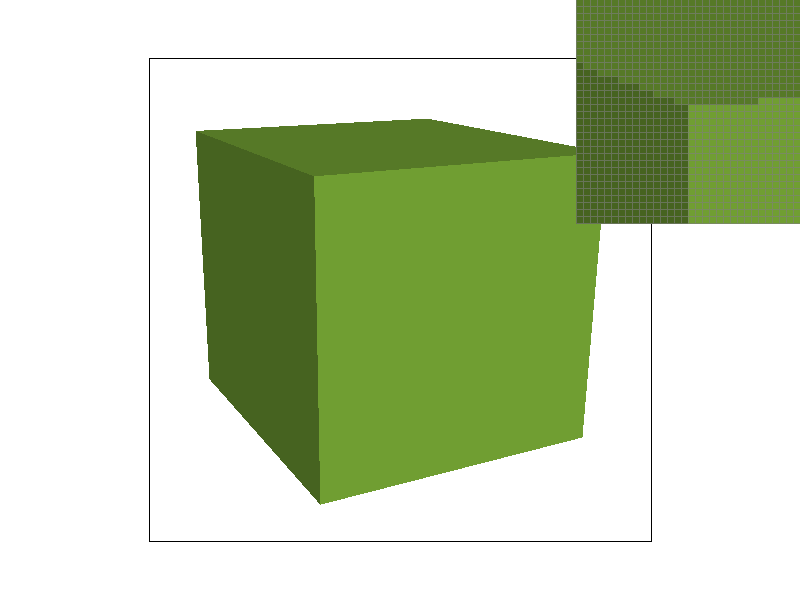 Top Visible Corner ( svg/basic/test4.svg) |
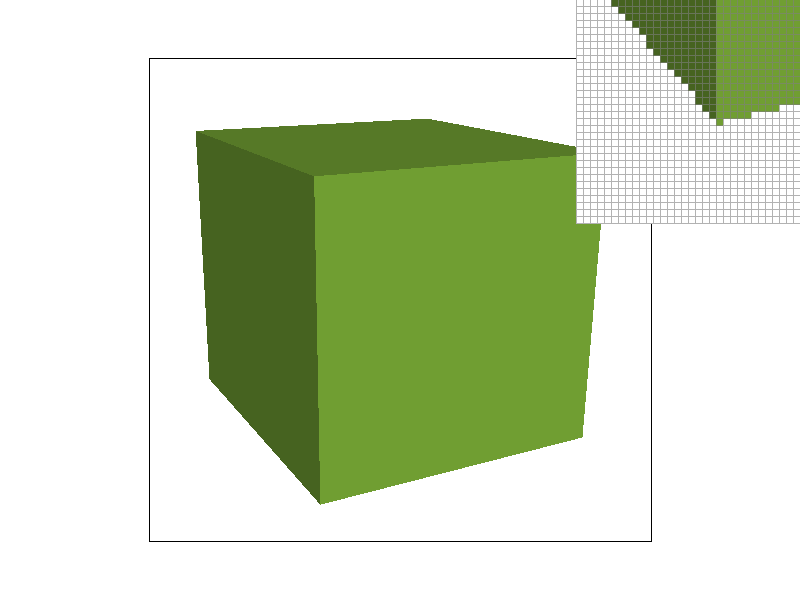 Bottom Visible Corner ( svg/basic/test4.svg) |
RasterizerImp::rasterize_triangle in Part 1 includes aliasing. This manifests as jagged edges ("jaggies"),
as a result of low resolution. This portion introduces anti-aliasing to fix this, using a specific strategy called supersampling. This means that, for each pixel, we consider RasterizerImp::sample_rate subpixels with continuous, equidistant coordinates,
and average out their values to render to the framebuffer. Supersampling essentially calculates a higher resolution, and takes local averages to bring back to the target resolution in spite of the pixel constraints. To achieve this, we added an intermediate sampling buffer before the render buffer that we use to store all the super samples. Finally, we took the average RGB values for the samples in each pixel and wrote those averages to the render buffer.
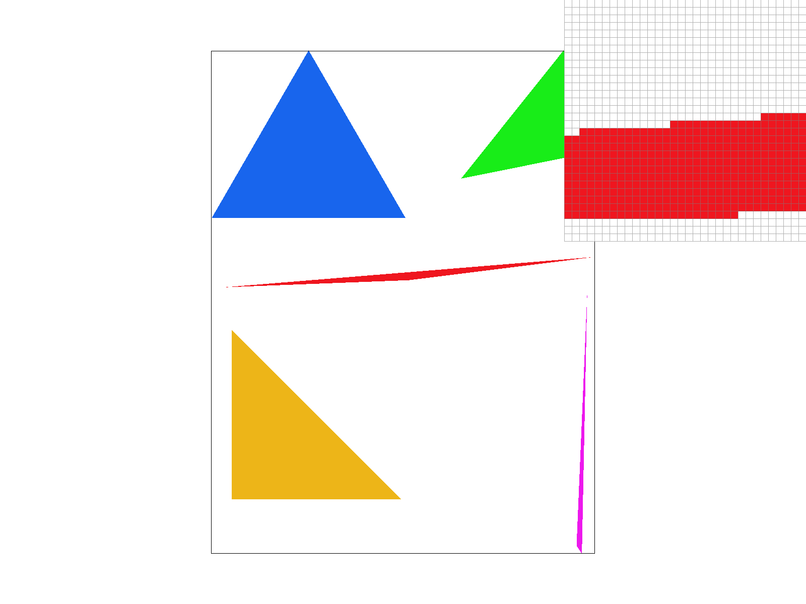 Sample rate 1 |
Sample rate 4 |
Sample rate 16 |
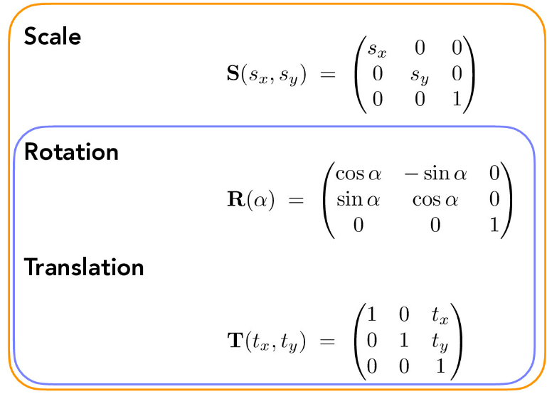 Lecture 4 (slide 26) |
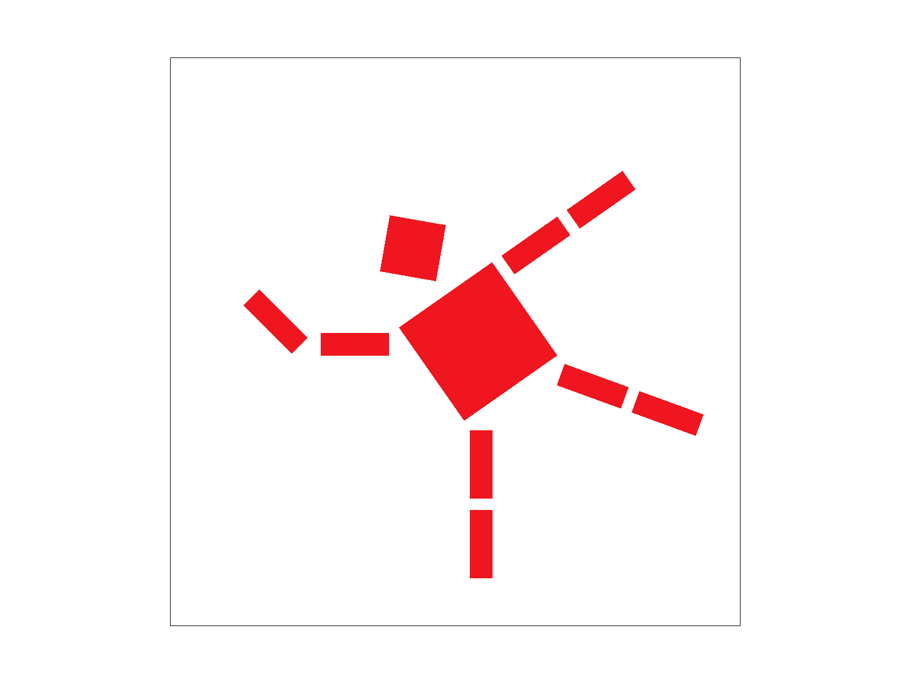 Cubeman slacklining ( docs/my_robot.svg) |
RasterizerImp::rasterize_interpolated_color_triangle.
Below are some examples of this function in use. The first image is a triangle plotted with one red, one green and one blue vertex.
The second image is a screenshot of task7.
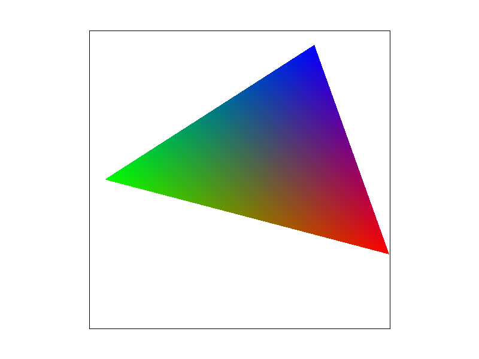 svg/custom/bary.svg |
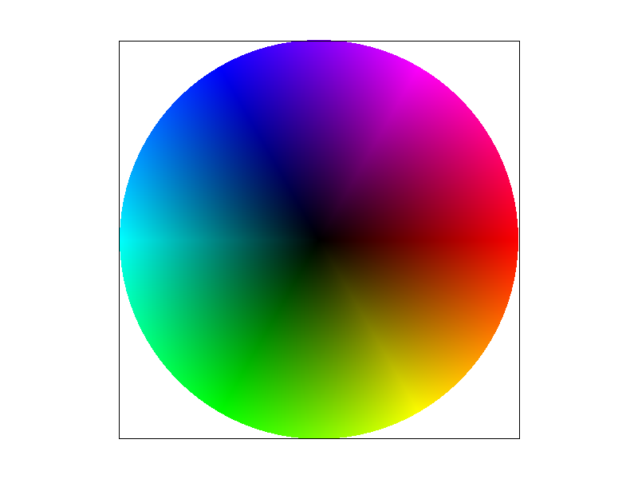 svg/basic/test7.svg |
svg/textmap/test6.svg:
Nearest Neighbor Sampling (rate: 1) |
Nearest Neighbor Sampling (rate: 16) |
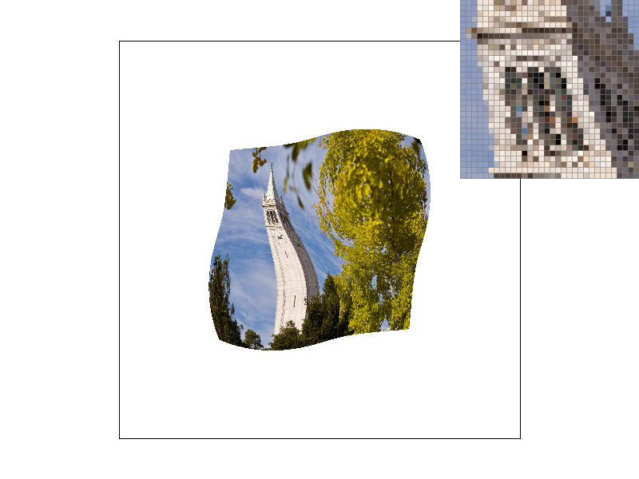 Bilinear Sampling (rate: 1) |
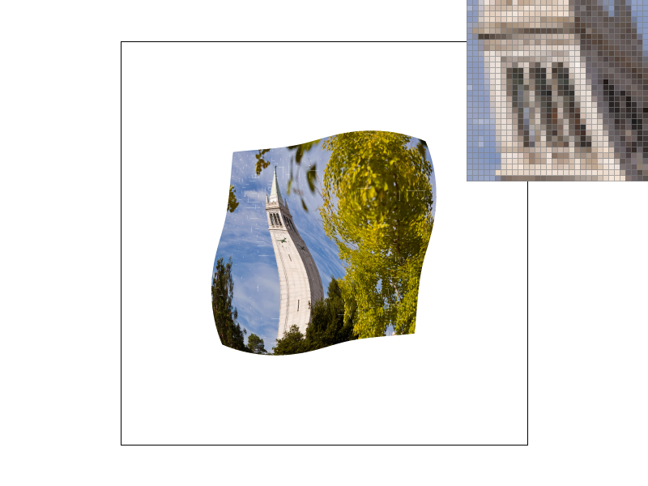 Bilinear Sampling (rate: 16) |
lsm, which can be toggled with the L key.
Our level sampling is determined by the value of this variable as follows:
L_ZERO: We use zero sampling, meaning the mipmap level is always set to 0. As other mipmap levels do not need to be considered, this has the best time complexity because
as only one image needs to be rendered. It is also the most memory efficient. Despite this, however, it has the worst anti-aliasing effects as it does not
utilize the anti-aliasing properties of the mipmap.L_NEAREST: We use nearest-neighbor sampling, meaning we use the nearest appropriate mipmap level, one that is discrete and not continuous. This has the same memory efficiency as bilinear sampling, but has better time efficiency
as calculating minimum distance requires less computation than performing bilinear interpolation. Though it is better than zero level sampling, it is worse at antialiasing than bilinear level sampling.L_LINEAR: We use bilinear sampling, meaning we perform vertical and horizontal linear interpolations and determine the mipmap as a weighted sum. This has the same memory efficiency as nearest neighbor sampling, but has worse time effiency.
It trades worse time efficiency for better anti-aliasing effects, which is why it is generally considered the best type of level sampling.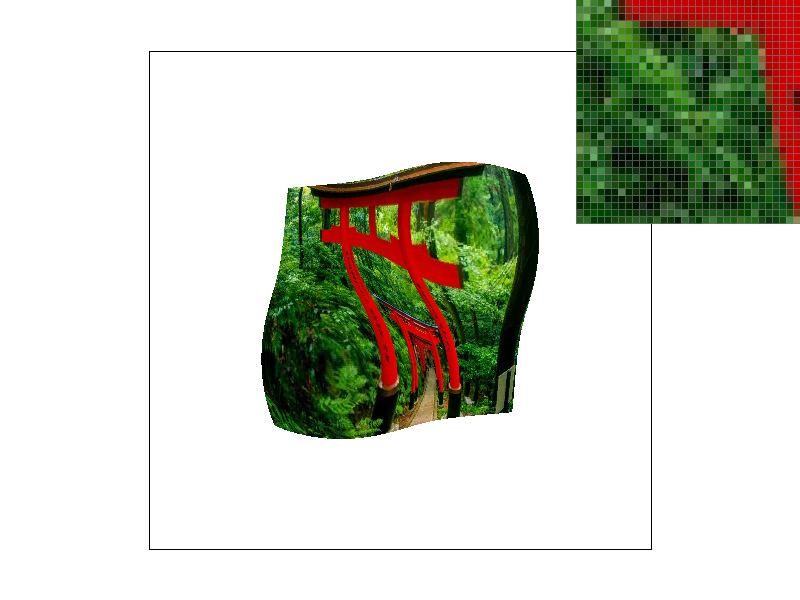 L_ZERO, P_NEAREST |
L_ZERO, P_LINEAR |
L_NEAREST, P_NEAREST |
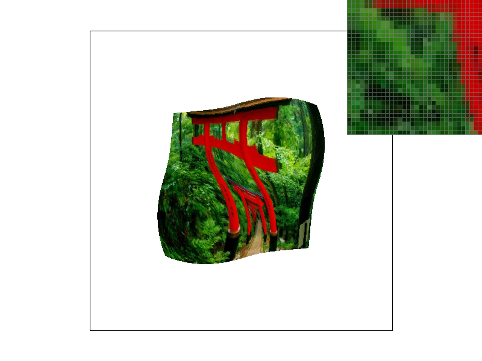 L_NEAREST, P_LINEAR |